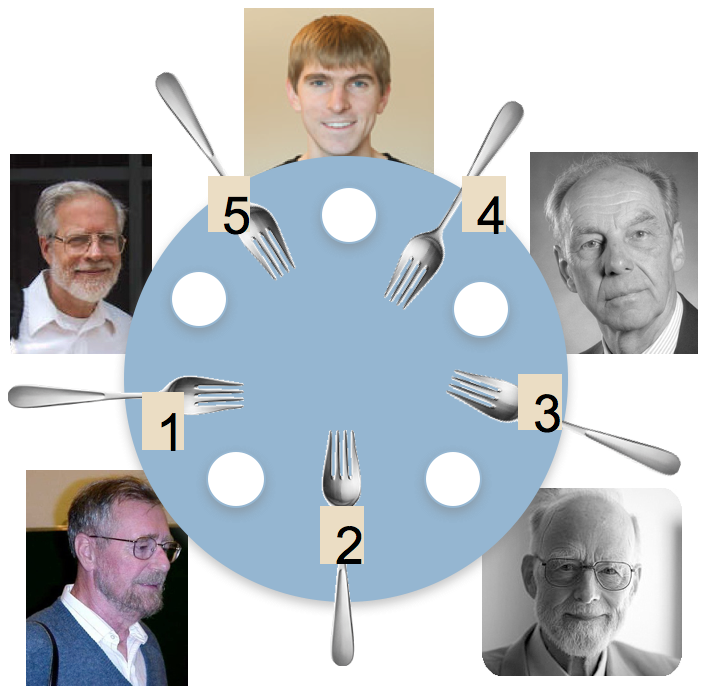
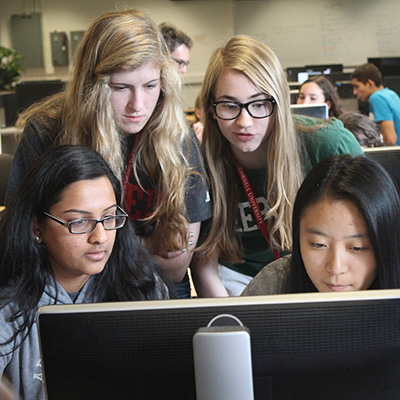
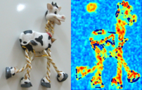
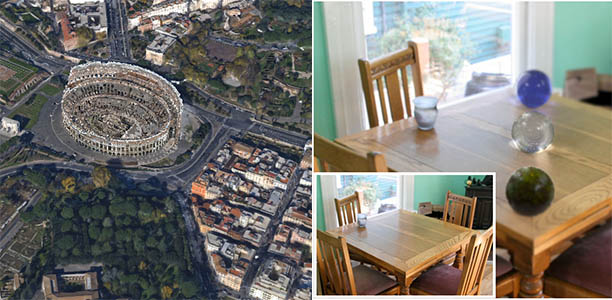
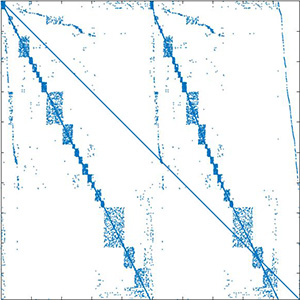
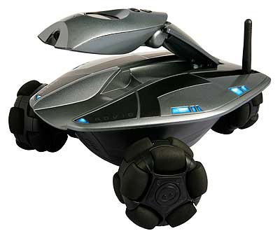

I'm a PhD student in computer science at Cornell. I work with Noah Snavely and Kavita Bala on computer vision and computational photography. See below for more information on my research and teaching activities.
Email: swehrwein at cs dot cornell dot edu.
News:
- 2017-01-20: I will be co-teaching CS2110, OOP and Data Structures, with David Gries this semester.
- 2016-05-31: I am starting a summer internship in Facebook's Computational Photography group, working with Rick Szeliski.
- 2015-11-04: Slides and poster are now available for Shadow Detection and Sun Direction in Photo Collections - see the project page for downloads.
- 2015-08-31: Our paper Shadow Detection and Sun Direction in Photo Collections will be presented as an oral at 3DV in Lyon, France in October.
- 2015-08-19: I had a great time helping to run the 2015 edition of CURIE Academy!
Research

Shadow Detection and Sun Direction in Photo Collections
Scott Wehrwein, Kavita Bala, Noah Snavely
3DV 2015 (Oral Presentation)

Photometric Ambient Occlusion
Daniel Hauagge, Scott Wehrwein, Kavita Bala, Noah Snavely
PAMI 2015, CVPR 2013

Reasoning about Photo Collections using Models of Outdoor Illumination
Daniel Hauagge, Scott Wehrwein, Paul Upchurch, Kavita Bala, Noah Snavely
BMVC 2014
Static Compressive Tracking
Daniel J. Townsend, Phillip K. Poon, Scott Wehrwein, Tariq Osman, Adrian V. Mariano, Esteban. M. Vera, Michael. D. Stenner, and Michael. E. Gehm
Optics Express 2012
Teaching

CS2110: OOP and Data Structures
Co-Instructor
Spring 2017
I shared responsibilities for all aspects of this large course with my co-instructor, David Gries. In an effort to incorporate active learning techniques in a large lecture environment, I introduced the use of in-class polling using Piazza, which had previously been only used for online Q&A in this course. We found that this is particularly helpful in helping students recognize concepts they need to study in more depth. My other responsibilities included:
- Giving lectures for 2110 (about 620 students) and the associated 1-credit supplement course, 2111 (about 100 students).
- Updating, releasing, and overseeing the grading of grading eight programming assignments.
- Developing new tutorial videos on Java language constructs and data structures.
- Managing a staff of 42 undergraduate and graduate consultants and TAs.
- Developing, giving, and overseeing the grading of exams.

CURIE Academy
An outreach program for high school girls interested in engineering.
Summer 2015
Working with Noah Snavely and a great team of TAs, I helped run the research project portion of the 2015 edition of Cornell Diversity Programs in Engineering's CURIE Academy. 52 high school girls from all over the country (and a few from Europe!) spent a week at Cornell learning what engineering is all about. They spent each morning being introduced to a couple different fields of engineering, then spent each afternoon with us, learning how to do image processing in Matlab and working in teams to implement some really cool projects. I taught lessons during the first two days and supervised two group projects for the final two days. One group implemented custom photoshop-like filters and the other did live webcam face tracking.
{kind=link}
{kind=link}

CS4670: Computer Vision
Head TA
Spring 2015, Fall 2013
I managed a TA staff of 10, oversaw ports of two assignments to Python from C and the introduction of a new assignment on CNNs. I also gave a handful of guest lectures and held review sessions, office hours, and managed project grading. In Fall 2013, I held office hours, provided extra help sessions for a hearing-impaired student, and graded projects.

CS6644: Modeling the World
Teaching Assistant
Fall 2014
I co-developed the course with Professor Kavita Bala, including topic/paper selection, assignments, and some lectures. Topics focused on reconstruction and recognition for building models of the world from relatively unstructured input data. We met with groups to guide their paper presentations and supervised their final projects.

CS4220: Numerical Analysis: Linear and Nonlinear Problems
Teaching Assistant
Spring 2014
I held office hours and graded homework assignments.

CS1114: Introduction to Computing using Matlab and Robotics
Teaching Assistant
Spring 2013
I was responsible for designing and running weekly lab sections in which students engaged in fun programming activities that related to concepts covered in the main part of the course. Activities included demosaicing, graph traversal, frequency analysis and the Fourier transform, and the Game of Life. I developed a number of the activities from scratch, and improved existing activities for some. I also held office hours and graded projects.